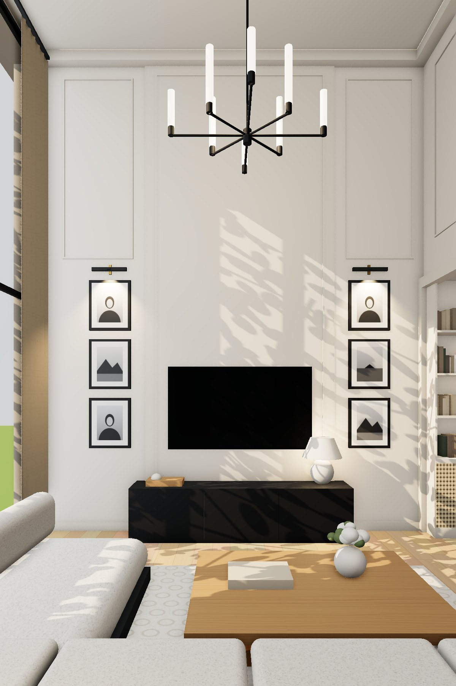
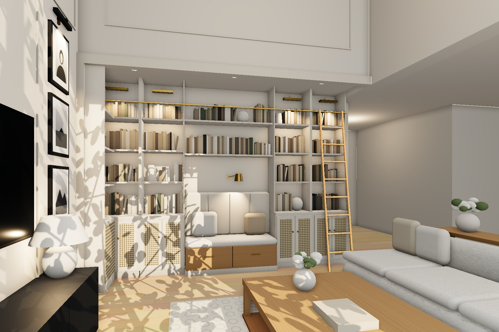
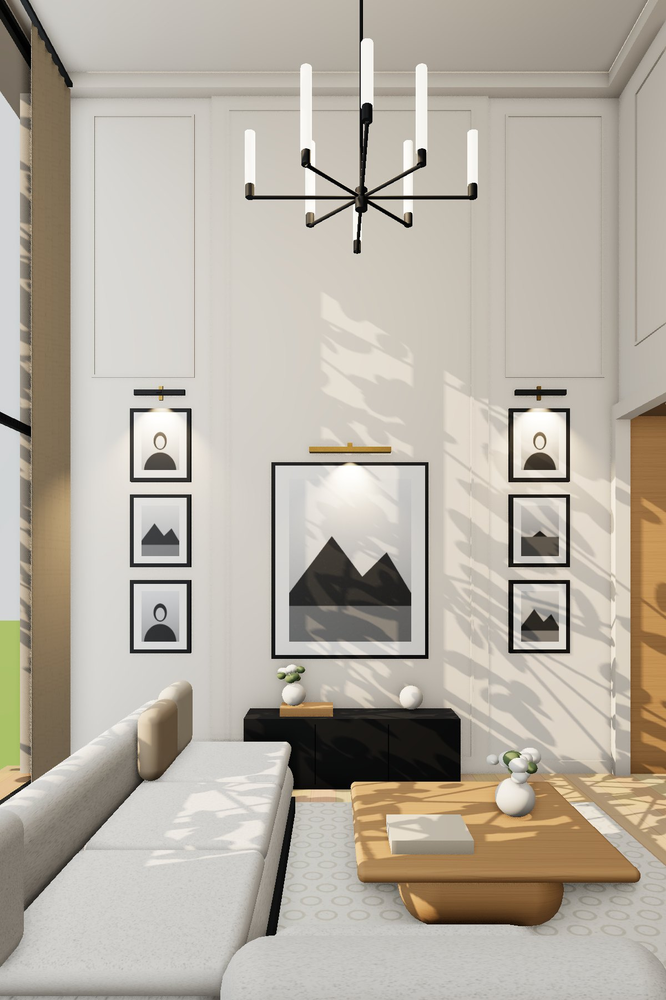
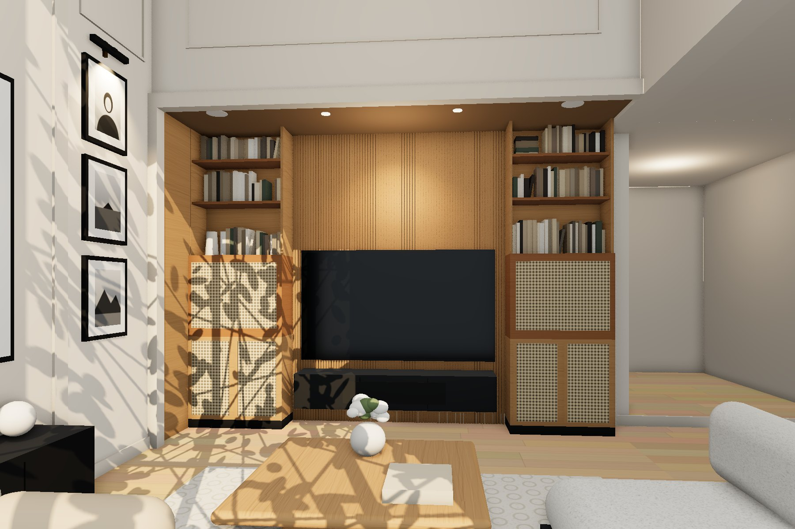

Salon – wnęka 102 cm · wizualizacje
Wizualizacje poglądowe na wymiarach z DWG (wnęka 102 × 394 × 290 cm, salon ~5,5 m). Dekoracje i materiały są przykładowe. Model 3D do obracania →
Koncepcja 1 · Biblioteka we wnęce


Koncepcja 2 · TV we wnęce


Po prawej stronie ujęć wnęki widać otwór do korytarza (hol 0.3.1), ~225 cm, bez drzwi.